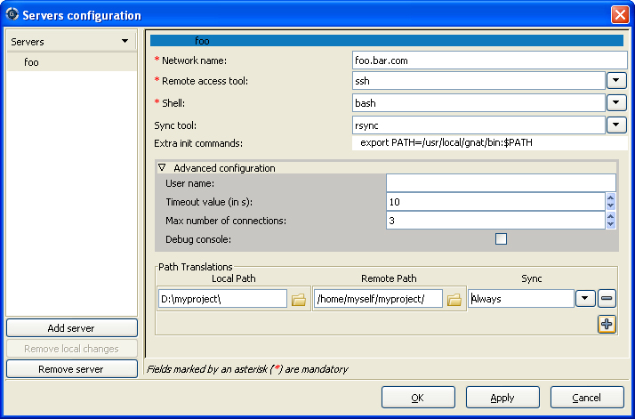
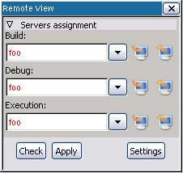

Table Of Contents
Previous topic
14. Working in a Cross Environment
Next topic
16. Customizing and Extending GPS

14. Working in a Cross Environment
16. Customizing and Extending GPS
In a network environment, it is common for programmers to use a desktop computer that is not directly suitable for their development tasks. For example, each developer may have a desktop PC running Windows or GNU/Linux as their main entrypoint to the company network. They may do all their actual development work using project resources shared on networked servers. These remote servers may also be running an operating system that is different from the one on their desktop machine.
A typical way of operating in such an environment is to access the server through a remote windowing system such as X-Window. GPS does indeed work in such a context but it is not necessarily the most efficient organization. Running GPS remotely on a shared server will increase the workload of the server as well as the traffic on the network. When the network is slow or saturated, user interactions can become uncomfortably sluggish. This is unfortunate because the desktop used to access the network is often a powerful PC that remains idle most of the time. To address this situation, GPS offers the option to run natively on the desktop, with compilation, run and/or debug activities performed transparently on one or more remote servers.
In order to compile, run or debug on a host remote from GPS, three conditions must be met:
Have a remote connection to the host using ‘rsh’, ‘ssh’ or ‘telnet’. Note that GPS can now handle passwords for such connections.
Have either a Network Filesystem (i.e. NFS, SMB or equivalent) sharing the project files between the host and the target, or have rsync installed on both client and server. Note that rsync can be found at http://www.samba.org/rsync/ for unix, and comes as part of cygwin under Windows: http://www.cygwin.com.
Subprojects must be ‘withed’ by the main project using relative paths, or the same absolute paths must exist on the machines involved.
The full remote development setup is performed in two broad steps:
In order to configure remote servers, you need to open the remote configuration dialog. A predefined configuration can also be set when installing GPS, using xml files. Defining a remote server, and Defining a remote path translation, for more information.
The remote configuration dialog is opened via the remote view. You can open it using the menu Tools->Views->Remote.

Once the Remote View is opened, click on Settings to open the servers configuration dialog.
This dialog is composed of two parts:
You need first to create a new server. For this, click on the button Add Server on the bottom left part of the dialog. Enter a nickname identifying the server you want to connect to (this is not necessarily the network name of this server). Note that this nickname identifies the server and therefore must be unique. This new server is then automatically selected, and the right part of the dialog shows its configuration, which is empty for the most part.
The first configuration part that needs to be filled concerns the way we will connect to this server:
You have to enter first all mandatory fields, identified by an asterisk:
Other fields might need to be taken into consideration, but they are not mandatory. They are, for the most part, accessible through the advanced configuration pane.
The last configuration part defines the path translations between your local host and the remote server.
The remote paths definition will allow GPS to translate your locally loaded project (the project that resides in your local filesystem) to paths used on the remote server. This part also tells GPS how to keep those paths synchronized between the local machine and the remote server.
All your project’s dependencies must then reside in a path that is defined here. Note that you can retrieve those paths by using gnat list -v -Pyour_project. In particular, the path to the GNAT run-time (adainclude directory) needs to be mapped so that code completion and source navigation work properly on run-time entities.
To add a new path, click on the + button, and enter the corresponding local and remote paths.
You can easily select the desired paths by clicking on the icon next to the path’s entry. Remote browsing is allowed only when the connection configuration is set (Connection settings.) Clicking on Apply will apply your connection configuration and allow you to browse the remote host to select the remote paths.
Five kinds of path synchronization can be set for each defined path:
The way those paths need to be configured depends on your network architecture.
GPS defines four different remote operation categories: Build operations, Debug operations, Execution operations and Tools operations. All compiler related operations are performed on the Build_Server. The Tools server is somewhat special and will be explained later. The debugger is run on the Debug_Server, and the project’s resulting programs are run on the Execution_Server. The GPS_Server (the local machine) is used for all other operations.
The Tools server is defined to handle all compiler related operations that do not depend on a specific compiler version. It is used in dual compilation mode, for example, to determine whether the action can be safely run using a very recent compiler toolchain (this is the tools server), or whether a specific older baseline compiler version must be used.
In case the remote mode is activated, and the dual compilation mode is not, all Tools server operations are executed on the build server. Otherwise, if the dual compilation mode is activated, then the tools server operations are always executed on the local machine.
The Remote view (Tools->Views->Remote) allows you to assign servers to operation categories for the currently loaded project. You may assign each operation category a distinct server if the Servers assignment tab is fully expanded. Alternatively, you may assign all categories to a single server in one step if the Servers assignment tab is collapsed.
When a server is selected for a particular category, the change is not immediately effective. To indicate that fact, the server’s name will appear in red. This approach allows you to check the configuration before applying it, by pressing the Check button. This action will test for correct remote hosts connection. It will also verify that the project path exists on the build server and that it has an equivalence on the local machine.
Clicking on the Apply button will perform the following actions:
If one of the above operations fails, corresponding errors are reported in the Messages view and the previous project settings are retained.
Once a remote server is assigned, this remote configuration will be automatically loaded each time the project is loaded.
The two buttons on the right of each server can be used to manually perform a synchronization from the remote host to your local machine (left button) or from your local machine to the remote host (right button).
If the project you want to work with is already on a distant server, you can directly load it on your local GPS.
To do this, use the Project->Open From Host menu. Then select the server’s nickname. This will show you its file tree. Navigate to your project and select it. The project will be loaded as described above, with all remote operations categories assigned to the selected server by default.
You can reload your project using the local files on your machine. The remote configuration will then be automatically reapplied.
The GPS remote mode imposes a few limitations:
Execution: you cannot use an external terminal to remotely execute your application. The Use external terminal checkbox of the run dialog will have no effect if the program is run remotely.
Debugging: you cannot use a separate execution window. The Use separate execution window option is ignored for remote debugging sessions.
Cygwin on remote host: the GNAT compilation toolchain does not understand cygwin’s mounted directories. In order to use GPS with a remote Windows server using cygwin’s bash, you need to use directories that are the same on Windows and cygwin (absolute paths). For example, a project having a C:\my_project will be accepted if cygwin’s path is /my_project, but will not be accepted if /cygdrive/c/my_project is used.
Note that even if you use cygwin’s sshd on such a server, you can still access it using cmd.exe (Connection settings.)